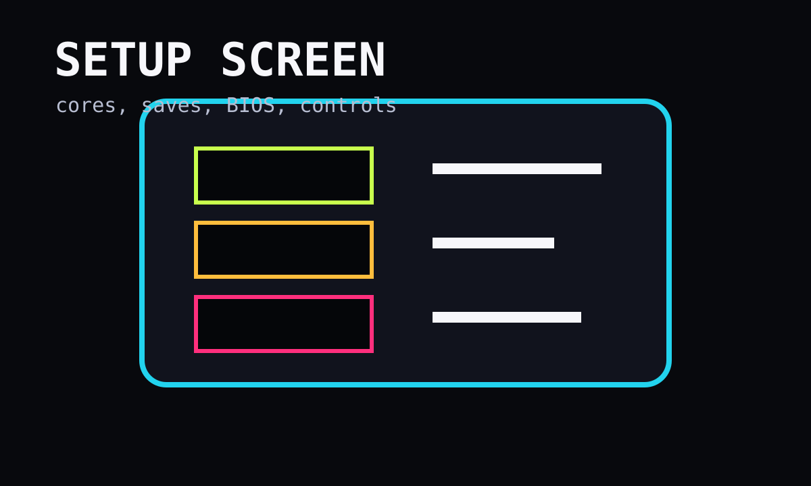

guide · Emulation
Retro Handhelds Are Great, Setup Still Sucks
Retro handhelds are better than ever, but players still need clean files, good cores and readable setup guides.

TL;DR
The hardware got better. The setup is still confusing for normal players.
Why gamers care
Cores, BIOS files, folders and saves can kill the vibe before the game starts.
Move
Use simple guides and keep your library organized from day one.
The short version
Retro handhelds are in a good place, but emulation still throws too many weird terms at new users.
The friction points
People get stuck on cores, BIOS files, file names, save folders, controls and which format belongs to which system.
For Arcade World
Every confusing term should become a short guide. That is useful for players and strong for SEO.
Sources and further reading
Keep exploring
Open the Game Room or visit the latest stories.